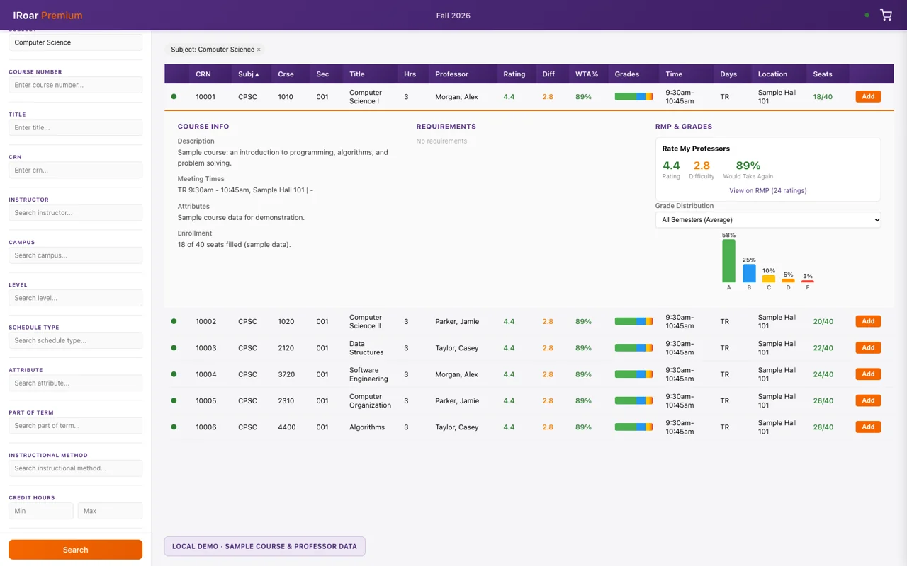
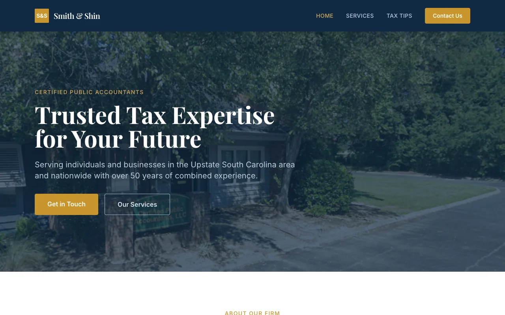

iRoar Premium
A Chrome extension for Clemson’s course registration that puts professor ratings and grade distributions next to each class. The preview uses sample data.
Source code
Software engineer building lending and finance systems
At MedShift I build the workflows that pay out funded loans, record them in accounting, and reconcile them with finance. I also set up how my team works with AI coding tools. I finished my M.S. in computer science at Clemson with a 4.0 while working full-time.
I work across Django REST Framework, Vue, and TypeScript on a lending platform, mostly on what happens after a loan is approved: paying it out, recording it, and reconciling it with finance. I started out shipping lending features and fixing production defects and N+1 queries to improve API performance.
Disbursement totals include historical records backfilled when the workflow launched. They measure money recorded, not revenue.
Built and own the workflow that pays out funded applications. It replaced manual finance work with automated processing and reconciliation.
Wrote the integration that posts purchases and invoices to QuickBooks Online, plus the financial API integrations and document collection used for asset sales.
Standardized how the team builds with AI: repository-level architecture and testing conventions, reusable pre-PR checks, MCP integrations, and an AI pull-request review pipeline where people still make the call.
Tracked down a pricing bug by reconstructing the affected payment schedules and checking each calculation against recorded payments, then shipped the fix.
Senior Capstone Researcher Aug – Dec 2024
Designed a REST API and synthetic healthcare datasets for Power BI dashboards that track nurse workload with the NASA Task Load Index, and contributed to the project’s React site.
Software Engineer, contract Jun – Sep 2023
Resolved more than 50 issues in a Ruby on Rails SaaS platform and built interactive pricing calculators and onboarding documentation.
Software Engineer Intern Jun 2022 – Jan 2023
Pair-programmed Rails and JavaScript infrastructure upgrades and dependency replacements, and joined client architecture and requirements discussions.
Software Engineer Sep 2020 – Dec 2021
Shipped a React Native app to both app stores and built a barcode-driven warehouse tracking system on Linux.
I completed the master’s while working full-time at MedShift.
Things I’ve built outside work.

A Chrome extension for Clemson’s course registration that puts professor ratings and grade distributions next to each class. The preview uses sample data.
Source code
The website for my dad’s accounting firm in South Carolina. I built it and run the domain and hosting.
Visit the siteControlled experiments on AI coding agents, with open data.
160 attempts testing whether confident, incorrect debugging advice derails a coding agent.
80 bug-fixing attempts measuring whether new regression tests help agents fix bugs and catch future faults.
I’m into travel, investing, and finding a good deal. I spend an unreasonable amount of time using AI, and I take photos, mostly outdoors.
Email is the best way to reach me about a role or a project.
adamruns27@gmail.com